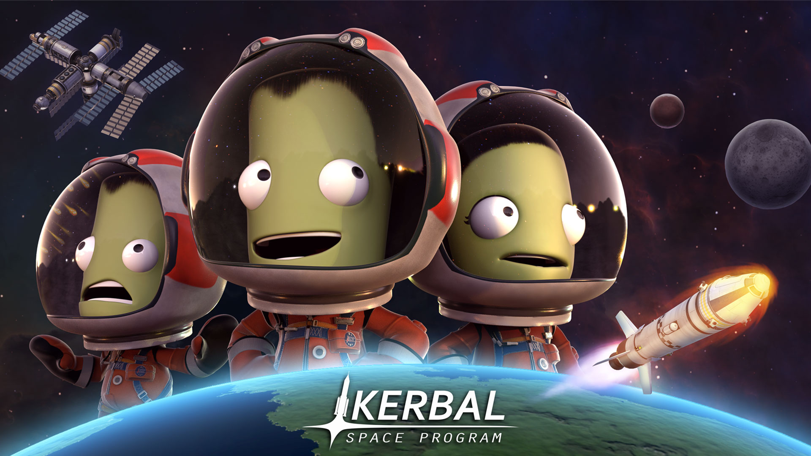
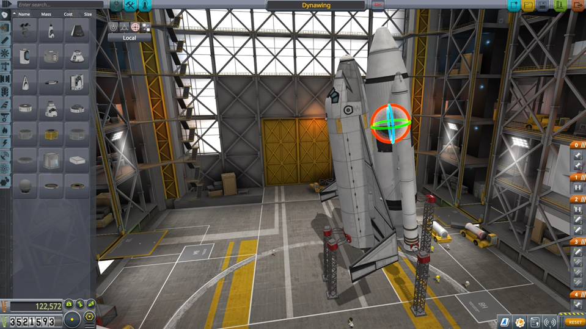

0
Accède au VAB
Depuis le Centre Spatial, clique sur le bâtiment "Vehicle Assembly Building" (VAB). C'est un grand hangar bleu et blanc.

Apprends à construire, lancer et piloter ta toute première fusée dans Kerbal Space Program.
Salut futur ingénieur spatial ! Bienvenue dans le VAB (le Bâtiment d'Assemblage des Véhicules). C'est ici que tu vas assembler ta toute première fusée pour aller explorer l'espace. Suis ce guide pour bien commencer.
Lorsque tu entres dans le VAB, tout peut sembler impressionnant. Voici les zones clés à connaître :
• Le centre de la pièce : C'est là que se trouve le socle de lancement. Tout ce que tu attaches ici sera ta fusée.
• La barre latérale gauche (Les pièces) : C'est ton catalogue ! Tu y trouveras tous les moteurs, réservoirs et capsules classés par catégories.
• La barre supérieure droite (Les outils) : Ici, tu peux renommer ta fusée, voir les informations de vol, et surtout, lancer ta fusée sur le pas de tir.

Pour qu'une fusée décolle et atteigne l'espace, elle a besoin de trois éléments de base, empilés de haut en bas :
| Élément | Rôle | Où le trouver ? |
|---|---|---|
| Capsule (Pod) | C'est le cerveau et la maison du Kerbonaute. | Onglet "Pods" |
| Réservoirs | Ils contiennent le carburant nécessaire au voyage. | Onglet "Fuel Tanks" |
| Moteur | Il brûle le carburant pour propulser la fusée. | Onglet "Engines" |
Depuis le Centre Spatial, clique sur le bâtiment "Vehicle Assembly Building" (VAB). C'est un grand hangar bleu et blanc.
Choisis la capsule "Mk1 Command Pod" dans l'onglet des pièces et clique au centre du socle pour la poser.
Va dans l'onglet "Fuel Tanks" et prends un réservoir (comme le "FL-T400"). Clique juste en dessous de ta capsule pour l'attacher.
Va dans l'onglet "Engines". Choisis le "LV-T30 'Reliant'" et colle-le sous ton réservoir. C'est lui qui pousse ta fusée vers les étoiles.
Pour que ta fusée reste droite en vol, ajoute des ailerons dans l'onglet "Aerodynamics" sur les côtés du réservoir.
N'oublie surtout pas l'onglet "Utility" pour ajouter un parachute au sommet de ta capsule ! Sans lui, le retour sera très brutal.
Le Staging détermine l'ordre dans lequel les éléments de ta fusée s'activent lorsque tu appuies sur la barre "Espace" pendant le vol.
• Étape 0 (tout en haut) : Ton parachute. Il s'activera en dernier, lors de ton retour.
• Étape 1 (en dessous) : Le découpleur ou toute autre action de séparation.
• Étape 2 (la plus basse) : Ton moteur. Il s'allume dès que tu lances ta fusée !
Maintenant que ta fusée est construite et que tu as configuré le Staging, il est temps de la lancer !
• Clique sur "Launch" en haut à droite du VAB pour envoyer ta fusée au pas de tir.
• Appuie sur "Espace" pour démarrer le moteur ! Appuie sur "T" pour activer le SAS (Stability Augmentation System).
• Touches de vol : Z/S pour pencher avant/arrière, Q/D pour gauche/droite. Avec le SAS (T), ta fusée se stabilise seule !
Ne cherche pas à aller sur la Lune tout de suite ! Apprivoise ta machine avec ces défis progressifs :
Décolle, monte jusqu'à 2 000 mètres, puis coupe tes moteurs. Laisse la fusée retomber et ouvre ton parachute (touche Espace).
Essaye d'atteindre 10 000 mètres d'altitude. Apprends à garder ta fusée bien droite avec les touches Z, Q, S, D.
Ton objectif : atteindre 100 000 mètres. C'est là que le ciel devient noir et que tu deviens officiellement astronaute !
Maintenant que tu as compris le fonctionnement, voici quelques pistes pour faire évoluer ton engin :
"Le secret de l'ingénieur, c'est l'observation. Si ça explose, demande-toi : pourquoi ?"
• La stabilité en vol : Si ta fusée tournoie, ajoute des ailerons ou des moteurs orientables.
• La puissance brute : Plus de carburant = plus lourd. Comment compenser ?
• L'efficacité du retour : L'impact est trop fort ? Comment ralentir davantage la capsule ?
• Le design aéro : Comment rendre le "nez" de ta fusée plus aérodynamique ?